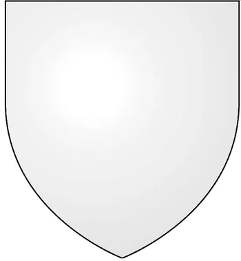

Hermandades juramentades de PONIENTE
- GUARDIA REAL
La Guardia Real, también conocida como las Espadas Blancas o las Capas Blancas, es la guardia del rey del Trono de Hierro. Supuestamente, está formada por los mejores caballeros de los Siete Reinos, quienes juran proteger al rey y su familia con sus propias vidas, obedeciendo sus órdenes y guardando sus secretos.
 - GUARDIA DE LA NOCHE
La Guardia de la Noche, también conocida como la Guardia, es una orden cuya misión es la defensa del Muro, la inmensa fortificación que sirve de frontera norte a los Siete Reinos, y proteger a los Siete Reinos de lo que existe más allá del Muro. La fundación de la Guardia data de la Edad de los Héroes, época en la que los Otros fueron desterrados.